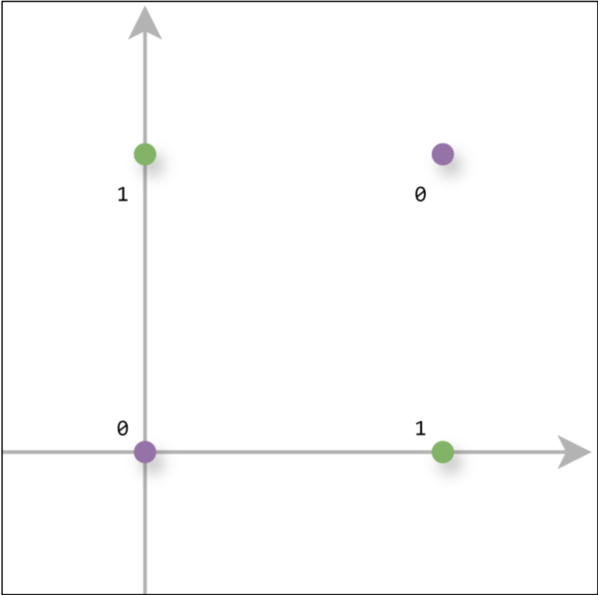

10_感知机
1 概述
感知机（Perceptron）是二分类模型， 接收多个信号，输出一个信号。
感知机的信号只有 0、1 两种取值。 
𝑥1、𝑥2 是输入信号，𝑦 是输出信号，𝑤1、𝑤2 是权重，○ 称为神经元或节点。只有当输入信号和权重计算之后超过阈值 θ 时才会输出 1，也称之为神经元被激活。 $$y= \begin{cases} 0 & (w_1x_1+w_2x_2\leq\theta) \\ 1 & (w_1x_1+w_2x_2>\theta) & \end{cases}$$
2 简单逻辑电路
2.1 与门(AND gate)
使用感知机实现简单逻辑电路，满足条件的参数有无数个，如 (w1, w2, θ) = (0.5, 0.5, 0.7)。 $$\begin{array}{|cc|c|} \hline x_{1} & x_{2} & y \\ \hline 0 & 0 & 0 \\ 1 & 0 & 0 \\ 0 & 1 & 0 \\ 1 & 1 & 1 \\ \hline \end{array}$$
1 | |
2.2 与非门(NAND gate)
与非门颠倒了与门的输出，满足条件的参数也有无数个，只要把与门的参数值取反即可，比如 (w1, w2, θ) = (−0.5, −0.5, −0.7)。 $$\begin{array}{|cc|c|} \hline x_{1} & x_{2} & y \\ \hline 0 & 0 & 1 \\ 1 & 0 & 1 \\ 0 & 1 & 1 \\ 1 & 1 & 0 \\ \hline \end{array}$$
1 | |
2.3 或门(OR gate)
实现或门的参数也有无数种，比如 (w1, w2, θ) = (0.5, 0.5, 0.4)。 $$\begin{array}{|cc|c|} \hline x_{1} & x_{2} & y \\ \hline 0 & 0 & 0 \\ 1 & 0 & 1 \\ 0 & 1 & 1 \\ 1 & 1 & 1 \\ \hline \end{array}$$
1 | |
2.4 扩展形式
考虑到以后的事情，这里将 θ 改为 −b，其中 𝑏 为偏置，𝑤1,𝑤2为权重。权重控制输入信号的重要性，偏置调整神经元被激活的容易程度。 $$y= \begin{cases} 0 & (b+w_1x_1+w_2x_2\leq0) \\ 1 & (b+w_1x_1+w_2x_2>0) & \end{cases}$$
再来使用这种形式实现一个与门： 1
2
3
4
5
6
7
8
9
10
11import numpy as np
def AND(x1, x2):
x = np.array([x1, x2])
w = np.array([0.5, 0.5])
b = -0.7
if np.sum(w * x) + b > 0:
return 1
else:
return 0
3 多层感知机
感知机的局限性在于它只能表示由一条直线划分的空间，使用之前的简单感知机，无法实现异或门（XOR gate）。 $$\begin{array}{|cc|c|} \hline x_{1} & x_{2} & y \\ \hline 0 & 0 & 0 \\ 1 & 0 & 1 \\ 0 & 1 & 1 \\ 1 & 1 & 0 \\ \hline \end{array}$$
无法使用一条直线将 0 和 1 分开。 
可以考虑使用与门、与非门、或门组合来构成异或门。 $$\begin{array}{|cc|cc|c|} \hline x_{1} & x_{2} & s_{1} & s_{2} & y \\ \hline 0 & 0 & 1 & 0 & 0 \\ 1 & 0 & 1 & 1 & 1 \\ 0 & 1 & 1 & 1 & 1\\ 1 & 1 & 0 & 1 & 0\\ \hline \end{array}$$

1 | |
使用感知机的表示方法来表示这个异或门。 
这就是多层感知机结构，第 0 层的两个神经元接收输入信号，并将信号发送给第 1 层的神经元。 第 1 层的神经元将信号发送给第 2 层的神经元。第 2 层的神经元输出结果。通过叠加层，感知机能进行更加灵活的表示。
这就是神经网络的基础。